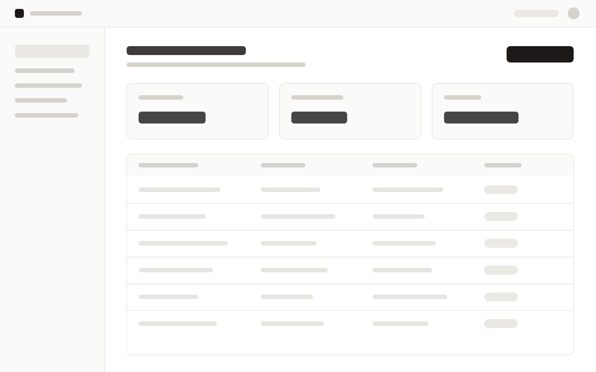

Userflow
Encodelabs · para Mercado LibrePlataforma multitenant de gestión documental para equipos de personas: firma electrónica, recibos de haberes con carga masiva, circuitos de documentos configurables y onboarding de colaboradores, con seguimiento en tiempo real y la identidad visual de cada empresa.